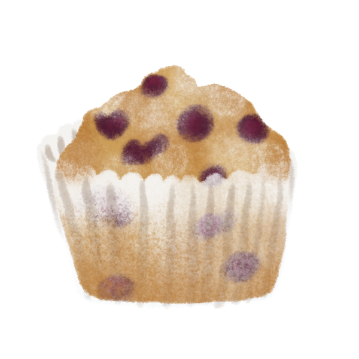
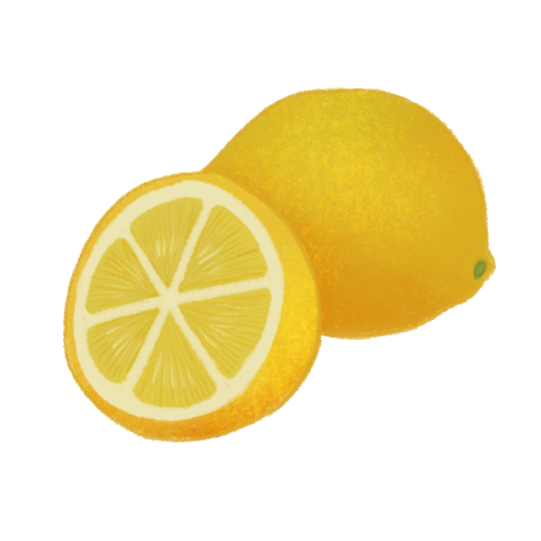

1. Preheat oven to 400 degrees Fahrenheit. Grease and flour a muffin pan, or line with paper wrappers.
2. In a large mixing bowl, whisk 1 1/2 cup flour, 3/4 cup sugar, baking powder, and salt.
3. Pour oil into a small measuring cup. Add egg, vanilla, and enough milk to reach the 1-cup mark (usually about 1/3 cup of milk). Stir to combine.
4. Pour into flour mixture and fold until just combined. Coat blueberries in flour, then stir into batter.
5.For the crumb topping, combine 1/2 cup sugar, 1/3 flour, 1/4 butter, and cinnamon. Mix with a fork until crumbly.
6. Spoon batter in muffin tin, filling right to the top. Spirnkle with crumb topping. Bake for 20-25 minutes until toothpick inserted into center comes out clean.


For lemon blueberry muffins, add the zest of one lemon into the sugar, rubbing them together with your fingers to extract flavor. Add in a tablespoon or two of lemon juice when you add the vanilla.
This also works great with fresh orange juice as well. When making orange blueberry muffins, I like to add an extra teaspoon of cinnamon to the batter for a warm, citrus flavor.